Pascal merupakan bahasa pemrograman yang cara penulisannya sangat dekat dengan cara penulisan algoritma structur english. Bagi yang sudah memahami algoritma, pascal akan sangat mudah untuk dimengerti. Pascal itu sendiri bukanlah nama dari sang pembuat, karena yang membuat bahasa pemrograman Pascal adalah Nicklus Wirth.
Soal ..!!
Buatlah program hitung gaji karyawan dengan ketentuan sebagai berikut :
- Gaji pokok untuk karyawan tetap sebesar Rp. 3.800.000 sedangkan untuk karyawan kontrak sebesar Rp. 3.600.000
- Uang keahlian (skill allowance) untuk karyawan tetap sebesar Rp. 200.000 sedangkan untuk karyawan kontrak tidak ada
- Uang transport sebesar Rp. 25.000 perhari
- Uang lembur sebesar Rp. 12.000 perjam
- Uang tempat tinggal (housing allowance) sebesar Rp. 65.000
- Uang shift 1 sebesar Rp. 2.000
- Uang shift 2 sebesar Rp. 3.000
- Uang shift 3 sebesar Rp. 5.000
- Uang kehadiran selama sebulan jika full (no absen) sebesar Rp. 50.000 ,jika 1 kali absen (tidak hadir) sebesar Rp. 25.000 ,jika 2 kali absen (tidak hadir) atau lebih tidak ada
- Rumus :
Total gaji = gaji pokok + uang transport + uang lembur + uang keahlian + jumlah uang shift + uang kehadiran + housing allowance
Untuk biaya jamsostek sebesar 3 % dari total gaji
Gaji bersih (net salary) = total gaji - biaya jamsostek
>> Ini adalah contoh source code program hitung gaji karyawan :
uses crt;
var
no,nama,sta : array [1..10] of string;
keh,ov,th,s1,s2,s3 : array [1..10] of longint;
ns,jams,ta,uo,shift,ha,tot,bs,skill,pre,us1,us2,us3 : array [1..10] of real;
x,jk : integer;
procedure desain_input;
begin
Textcolor(0);
textbackground(7);
clrscr;
gotoxy(20,02);write('==============================================');
gotoxy(30,03);write('PT.SUDO MANUFACTURING INDONESIA');
gotoxy(20,04);write('MM2100, Blok QQ-7 Cikarang Barat, Bekasi 17530');
gotoxy(20,05);write('==============================================');
gotoxy(20,06);write('Jumlah Karyawan : ');
gotoxy(20,07);write('No Induk Karyawan : ');
gotoxy(20,08);write('Nama Karyawan : ');
gotoxy(20,09);write('Status Karyawan : ');
gotoxy(20,10);write('Kehadiran : ');
gotoxy(20,11);write('Overtime : ');
gotoxy(20,12);write('Tidak Hadir (izin): ');
gotoxy(20,13);write('shift 1 : ');
gotoxy(20,14);write('shift 2 : ');
gotoxy(20,15);write('shift 3 : ');
end;
procedure desain_slipgaji;
begin
textcolor(0);
textbackground(2);
clrscr;
gotoxy(20,02);write('==============================================');
gotoxy(30,03);write('PT.SUDO MANUFACTURING INDONESIA');
gotoxy(20,04);write('MM2100, Blok QQ-7 Cikarang Barat, Bekasi 17530');
gotoxy(20,05);write('==============================================');
gotoxy(30,06);write('Slip Gaji Karyawan');
gotoxy(20,08);write('Nomor : ');
gotoxy(20,09);write('No Induk Karyawan : ');
gotoxy(20,10);write('Nama Karyawan : ');
gotoxy(20,11);write('Status Karyawan : ');
gotoxy(20,12);write('Basic Salary :.......... Rp. ');
gotoxy(20,13);write('Transport Allowance :.......... Rp. ');
gotoxy(20,14);write('Uang Overtime :.......... Rp. ');
gotoxy(20,15);write('Shift 1.2.3 Allowance :.......... Rp. ');
gotoxy(20,16);write('Skill Allowance :.......... Rp. ');
gotoxy(20,17);write('Premium No Allowance :.......... Rp. ');
gotoxy(20,18);write('Housing Allowance :.......... Rp. ');
gotoxy(20,19);write('Jamsostek 3% :.......... Rp. ');
gotoxy(20,20);write('Net Salary :.......... Rp. ');
end;
procedure desain_output;
begin
textcolor(7);
textbackground(0);
clrscr;
gotoxy(20,04);write('==============================================');
gotoxy(30,05);write('DAFTAR GAJI KARYAWAN');
gotoxy(30,06);write('PT.SUDO MANUFACTURING INDONESIA');
gotoxy(20,07);write('==============================================');
gotoxy(20,08);write(' No.');
gotoxy(30,08);write('Nama');
gotoxy(45,08);write('Status');
gotoxy(55,08);write(' Gaji');
gotoxy(20,09);write('==============================================');
end;
procedure input;
begin
textcolor(4);
gotoxy(40,06);readln(jk);
for x:=1 to jk do
begin
gotoxy(40,07); ClrEol; readln(no[x]);
gotoxy(40,08); ClrEol; readln(nama[x]);
gotoxy(40,09); ClrEol; readln(sta[x]);
gotoxy(40,10); ClrEol; readln(keh[x]);
gotoxy(40,11); ClrEol; readln(ov[x]);
gotoxy(40,12); ClrEol; readln(th[x]);
gotoxy(40,13); ClrEol; readln(s1[x]);
gotoxy(40,14); ClrEol; readln(s2[x]);
gotoxy(40,15); ClrEol; readln(s3[x]);
end;
end;
procedure proses;
begin
for x:=1 to jk do
begin
if sta[x]='kontrak' then bs[x]:=3600000
else bs[x]:=3800000;
if sta[x]='kontrak' then skill[x]:=0
else skill[x]:=200000;
if th[x]=0 then pre[x]:=50000
else if th[x]=1 then pre[x]:=25000
else pre[x]:=0;
us1[x]:=s1[x]*2000;
us2[x]:=s2[x]*3000;
us3[x]:=s3[x]*5000;
ta[x]:=keh[x]*25000;
uo[x]:=ov[x]*12000;
shift[x]:=us1[x]+us2[x]+us3[x];
ha[x]:=65000;
tot[x]:=ta[x]+uo[x]+shift[x]+ha[x]+pre[x]+skill[x]+bs[x];
jams[x]:=3/100*tot[x];
ns[x]:=tot[x]-jams[x];
end;
end;
procedure output;
begin
textcolor(4);
for x:=1 to jk do
begin
gotoxy(20,10+x);write(' ',x);
gotoxy(30,10+x);write(nama[x]);
gotoxy(45,10+x);write(sta[x]);
gotoxy(55,10+x);write(ns[x]:0:0);
end;
end;
procedure slipgaji;
begin
for x:=1 to jk do
begin
textcolor(4);
gotoxy(40,08); ClrEol; write(x);
gotoxy(40,09); ClrEol; write(no[x]);
gotoxy(40,10); ClrEol; write(nama[x]);
gotoxy(40,11); ClrEol; write(sta[x]);
gotoxy(56,12); ClrEol; write(bs[x]:10:0);
gotoxy(56,13); ClrEol; write(ta[x]:10:0);
gotoxy(56,14); ClrEol; write(uo[x]:10:0);
gotoxy(56,15); ClrEol; write(shift[x]:10:0);
gotoxy(56,16); ClrEol; write(skill[x]:10:0);
gotoxy(56,17); ClrEol; write(pre[x]:10:0);
gotoxy(56,18); ClrEol; write(ha[x]:10:0);
gotoxy(56,19); ClrEol; write(jams[x]:10:0);
gotoxy(56,20); ClrEol; write(ns[x]:10:0);
textcolor(8);
gotoxy(20,22); write('tekan enter untuk melanjutkan !! ');
readkey;
end;
end;
begin
desain_input;
input;
proses;
desain_slipgaji;
slipgaji;
desain_output;
output;
end.
>> Ini adalah contoh inputnya (jumlah karyawan di isi sesuai kebutuhan yang ingin di perlukan) :
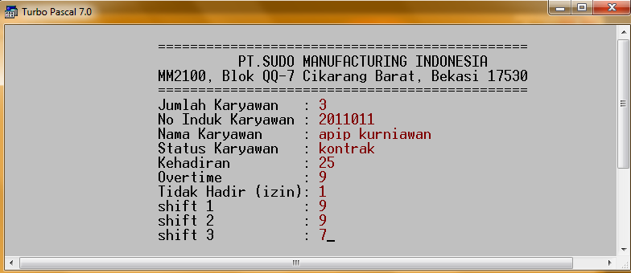
>> Ini adalah contoh outputnya atau (slip gaji) :
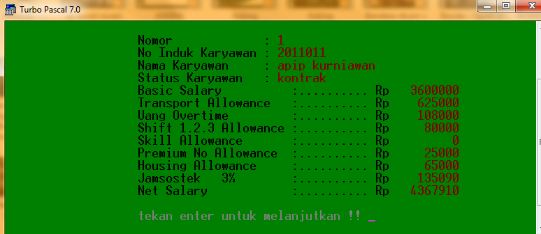
>> Ini adalah contoh daftar gaji karyawannya (akan muncul setelah menekan alt+f5) :
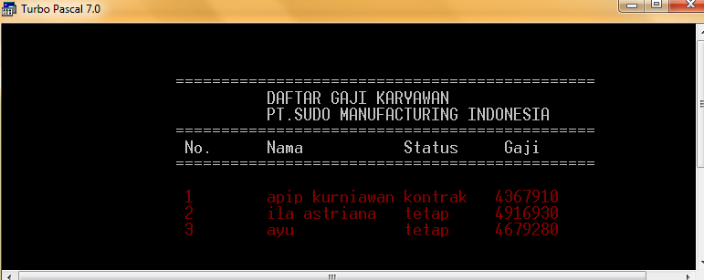
Soal ..!!
Buatlah program hitung Angsuran Beberapa Merk Kendaraan Motor Perbulan dengan ketentuan sebagai berikut :
- Harga jual untuk sepeda motor merk vario sebesar Rp. 15.000.000 ,scoopy sebesar Rp. 12.500.000 ,blaze sebesar Rp. 12.000.000 ,revo sebesar Rp. 13.000.000 ,beat sebesar Rp. 13.500.000
- Dengan uang muka sebesar Rp. 1.500.000 dan suku bunga sebesar 8% pertahun
- Rumus :
Nilai angsuran perbulan = ((harga jual - uang muka)+((harga jual - uang muka) * jumlah tahun * (suku bunga * jumlah tahun))) / jumlah bulan
>> Ini adalah contoh source code program hitung data angsuran kendaraan motor perbulan dengan jangka waktu yang berbeda :
uses crt;
var
merk : array [1..10] of string;
angsur1,angsur2,angsur3,angsur4,angsur5 : array [1..10] of real;
x,jk : integer;
um,hj,sb,bt1,bt2,bt3,bt4,bt5 : real;
procedure desain_input;
begin
Textcolor(1);
textbackground(7);
clrscr;
gotoxy(20,02);write('==============================================');
gotoxy(20,03);write(' DEALER MOTOR AKANG ABAH');
gotoxy(20,04);write(' Jl. Ahmad Yani No.34 Cibitung-Bekasi 17530');
gotoxy(20,05);write('==============================================');
gotoxy(20,08);write('Jumlah kendaraan : ');
gotoxy(20,10);write('Merk : ');
end;
procedure input;
begin
textcolor(6);
gotoxy(38,08);readln(jk);
for x:=1 to jk do
begin
gotoxy(30,10); ClrEol; readln(merk[x]);
end;
end;
procedure desain_output;
begin
textcolor(7);
textbackground(0);
clrscr;
gotoxy(5,04);write('===================================================================');
gotoxy(10,05);write(' DAFTAR ANGSURAN KENDARAAN PERBULAN');
gotoxy(10,06);write(' Jl. Ahmad Yani No.34 Cibitung-Bekasi 17530');
gotoxy(5,07);write('===================================================================');
gotoxy(5,08);write(' No.');
gotoxy(10,08);write('Merk Kendaraan');
gotoxy(25,08);write('1 tahun');
gotoxy(35,08);write('2 tahun');
gotoxy(45,08);write('3 tahun');
gotoxy(55,08);write('4 tahun');
gotoxy(65,08);write('5 tahun');
gotoxy(5,09);write('===================================================================');
end;
procedure output;
begin
textcolor(4);
for x:=1 to jk do
begin
gotoxy(5,10+x);write(' ',x);
gotoxy(13,10+x);write(merk[x]);
gotoxy(25,10+x);write(angsur1[x]:0:0);
gotoxy(35,10+x);write(angsur2[x]:0:0);
gotoxy(45,10+x);write(angsur3[x]:0:0);
gotoxy(55,10+x);write(angsur4[x]:0:0);
gotoxy(65,10+x);write(angsur5[x]:0:0);
end;
end;
procedure proses;
begin
clrscr;
um:=1500000;
for x:=1 to jk do
begin
if merk[x]='vario' then hj:=15000000
else if merk[x]='beat' then hj:=13500000
else if merk[x]='scoopy' then hj:=12500000
else if merk[x]='blaze' then hj:=12000000
else hj:=13000000;
sb:=8/100;
bt1:=1*12;
bt2:=2*12;
bt3:=3*12;
bt4:=4*12;
bt5:=5*12;
angsur1[x]:=((hj-um)+((hj-um)*1*(sb*1)))/bt1;
angsur2[x]:=((hj-um)+((hj-um)*2*(sb*2)))/bt2;
angsur3[x]:=((hj-um)+((hj-um)*3*(sb*3)))/bt3;
angsur4[x]:=((hj-um)+((hj-um)*4*(sb*4)))/bt4;
angsur5[x]:=((hj-um)+((hj-um)*5*(sb*5)))/bt5;
end;
end;
begin
desain_input;
input;
proses;
desain_output;
output;
end.
>> Ini adalah contoh tampilan inputnya (opsi : scoopy,blaze,beat,revo,vario) :
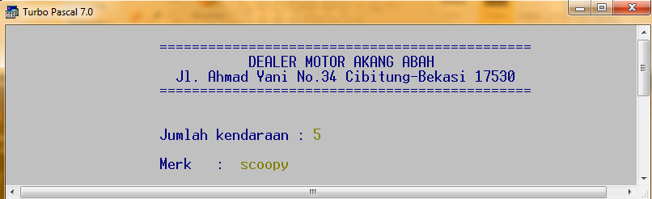
>> Ini adalah contoh tampilan outputnya :
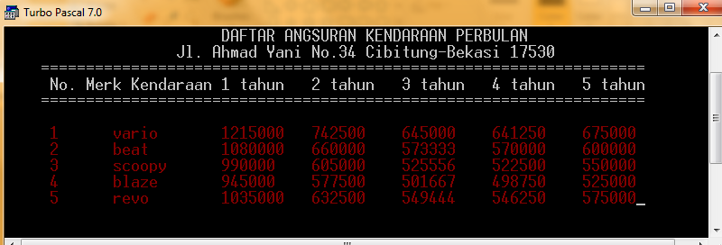
Soal ..!!
Buatlah program hitung Angsuran Kendaraan Motor Dengan Uang Muka Dan Pembayaran Awal dengan ketentuan sebagai berikut :
- Harga jual untuk sepeda motor merk vario sebesar Rp. 15.000.000 ,dan merk beat sebesar Rp. 12.000.000
- Jangka waktu minimal 12 bulan dengan suku bunga sebesar 2,2% pertahun
- Dan uang administrasi sebesar Rp. 120.000
- Rumus :
Nilai angsuran = (((harga jual-uang muka) * jangka waktu * suku bunga)+(harga jual-uang muka))/jangka waktu
Pembayaran awal = nilai angsuran + uang administrasi + uang muka
>> Ini adalah contoh source code program hitung angsuran merk kendaraan motor sesuai uang muka dan pembayaran awal :
uses crt;
var
x,hj,um,jw,adm :longint;
angsur,sb,pem :real;
merk :string;
begin
clrscr;
writeln;
write(' uang muka : ');readln(um);
write(' Merk kendaraan : ');readln(merk);
if merk='beat' then hj:= 12000000
else if merk='vario' then
hj:=15000000;
writeln;
writeln(' Tabel Angsuran ');
writeln('=========================================');
writeln(' Waktu Angsuran Pembayaran awal');
writeln('=========================================');
jw:=12;
sb:=0.022;
adm:=120000;
x:=1;
while x<=5 do
begin
angsur:=(((hj-um)*jw*sb)+(hj-um))/jw;
pem:=angsur+um+adm;
writeln(jw,' ','bulan',angsur:11:0,pem:14:0);
jw:=jw+6;
x:=x+1;
delay(300);
end;
readkey;
end.
>> Ini adalah contoh input beserta outputnya (opsi : vario,beat,scoopy) :
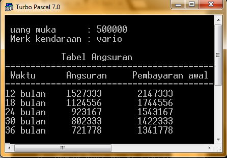
Soal ..!!
Buatlah program hitung biaya listrik setiap rumah dengan ketentuan sebagai berikut :
- Tarif per KWH dengan daya 450 sebesar Rp. 50 ,daya 900 tarifnya sebesar Rp. 60 ,daya 1300 tarifnya sebesar Rp. 70
- Untuk daya 1300 dikenakan biaya administrasi sebesar Rp. 35.000 ,sedangkan yang lainnya sebesar Rp. 20.000
- Rumus :
Biaya pemakaian = kwh * tarif
Untuk pajak (ppj) sebesar 5% dari biaya pemakaian
Biaya tagihan = biaya administrasi + ppj + biaya pemakaian
>> Ini adalah contoh source code program hitung biaya listrik :
uses crt;
var
no,nama : array [1..10] of string;
daya,kwh : array [1..10] of longint;
tagih : array [1..10] of real;
ppj,ba,bp,tf : real;
x,jk : integer;
procedure interface_input;
begin
Textcolor(0);
textbackground(7);
clrscr;
gotoxy(20,02);write('==============================================');
gotoxy(20,03);write(' PT. PLN INDONESIA');
gotoxy(20,04);write(' Listrik untuk hidup yang lebih baik');
gotoxy(20,05);write('==============================================');
gotoxy(20,06);write(' INPUT DATA PELANGGAN');
gotoxy(20,08);write('Jumlah Data : ');
gotoxy(20,10);write('Nama Pelanggan : ');
gotoxy(20,11);write('Besar Daya : ');
gotoxy(20,12);write('Pemakaian KWH : ');
end;
procedure interface_output;
begin
textcolor(7);
textbackground(0);
clrscr;
gotoxy(10,04);write('================================================');
gotoxy(10,05);write(' DAFTAR TAGIHAN PELANGGAN');
gotoxy(10,06);write(' PT. PLN INDONESIA');
gotoxy(10,07);write('================================================');
gotoxy(10,08);write(' No.');
gotoxy(18,08);write('Nama');
gotoxy(30,08);write('Daya');
gotoxy(40,08);write('Kwh');
gotoxy(50,08);write('Tagihan');
gotoxy(10,09);write('================================================');
end;
procedure input;
begin
textcolor(4);
gotoxy(37,08);readln(jk);
for x:=1 to jk do
begin
gotoxy(37,10); ClrEol; readln(nama[x]);
gotoxy(37,11); ClrEol; readln(daya[x]);
gotoxy(37,12); ClrEol; readln(kwh[x]);
end;
end;
procedure output;
begin
textcolor(4);
for x:=1 to jk do
begin
gotoxy(10,10+x);write(' ',x);
gotoxy(18,10+x);write(nama[x]);
gotoxy(30,10+x);write(daya[x]);
gotoxy(40,10+x);write(kwh[x]);
gotoxy(50,10+x);write(' ',tagih[x]:0:0);
end;
end;
procedure hitung;
begin
for x:=1 to jk do
begin
if daya[x]=450 then tf:=50
else if daya[x]=1300 then tf:=70
else
tf:=60;
if daya[x]=1300 then ba:=35000
else
ba:=20000;
bp:=kwh[x]*tf;
ppj:=5/100*bp;
tagih[x]:=bp+ba+ppj;
end;
end;
begin;
interface_input;
input;
hitung;
interface_output;
output;
end.
>> Ini adalah contoh tampilan inputnya :
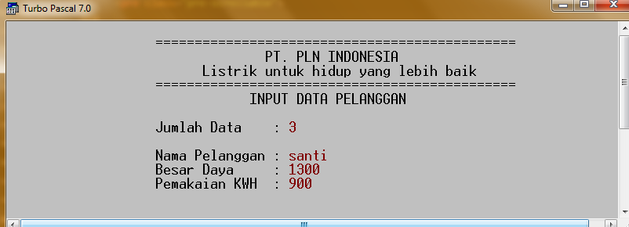
>> Ini adalah contoh tampilan outputnya :
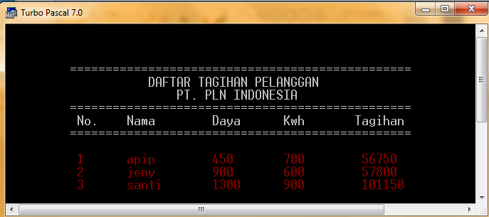
Soal ..!!
Buatlah program hitung biaya telepon dengan ketentuan sebagai berikut :
- Durasi 1 pulsa lamanya 5 detik
- Tarif 1 pulsa untuk lokal Rp. 150, Interlokal Rp. 200 dan SLI Rp. 500
- Rumus :
Durasi = waktu * 60
Pulsa = Durasi / 5
Biaya = Pulsa * Tarif
>> Ini adalah contoh source code program hitung biaya telepon :
uses crt;
var
nama : array [1..10] of string;
sal : array [1..10] of char;
x,jd : integer;
pulsa,biaya,tarif,dur : real;
wak :array [1..10] of longint;
begin
clrscr;
write(' JUMLAH DATA : ');readln(jd);
writeln;
x:=1;
while x<=jd do
begin
write(' Nama : ');readln(nama[x]);
write(' Saluran : ');readln(sal[x]);
write(' Waktu : ');readln(wak[x]);
writeln;
x:=x+1;
end;
writeln('===================================');
writeln(' NO NAMA SALURAN WAKTU BIAYA ');
writeln('===================================');
x:=1;
while x<=jd do
begin
if upcase(sal[x])='I' then tarif:=150
else if upcase(sal[x])='L' then tarif:=200
else
tarif:=500;
dur:=wak[x]*60;
pulsa:=dur/5;
biaya:=pulsa*tarif;
writeln(' ',x,nama[x]:7,sal[x]:7,' ',wak[x]:7,biaya:10:0);
x:=x+1;
delay(300);
end;
end.
>> Ini adalah contoh input beserta outputnya :
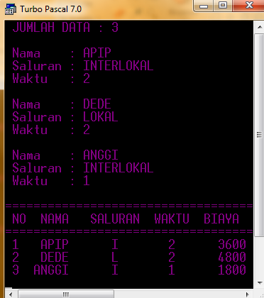
Soal ..!!
Buatlah program hitung biaya rawat inap di rumahsakit dengan ketentuan sebagai berikut :
- Untuk kelas 1 di kenakan biaya sebesar Rp. 500.000 ,kelas 2 sebesar Rp. 350.000 ,kelas 3 sebesar Rp. 200.000 perharinya
- Jika di periksa oleh dokter spesialis di kenakan biaya sebesar Rp. 100.000 perharinya,kalau dokter umum sebesar Rp. 75.000 perharinya
- Untuk biaya administrasi sebesar Rp. 25.000
- Rumus :
Biaya dokter = lama inap * biaya dokter
Biaya inap = lama inap * biaya inap
Total = administrasi + biaya dokter + biaya inap
>> Ini adalah contoh source code program hitung biaya rawat inap di rumahsakit :
uses crt;
var
kls : array [1..10] of char;
nama,dok : array [1..10] of string;
li : array [1..10] of longint;
x,jd : integer;
biaya1,biaya2,tf1,tf2,tot,adm : real;
begin
clrscr;
write(' JUMLAH DATA : ');readln(jd);
writeln;
x:=1;
adm:=25000;
while x<=jd do
begin
write(' NAMA : ');readln(nama[x]);
write(' KELAS : ');readln(kls[x]);
write(' DOKTER : ');readln(dok[x]);
write(' LAMA INAP : ');readln(li[x]);
writeln;
x:=x+1;
end;
writeln('===============================================');
writeln(' NO NAMA KAMAR DOKTER LAMA INAP BIAYA ');
writeln('===============================================');
for x:=1 to jd do
begin
if dok[x]='spesialis' then tf1:=100000
else tf1:=75000;
biaya1:=li[x]*tf1;
if kls[x]='1'then tf2:=500000
else if kls[x]='2' then tf2:=350000
else
tf2:=200000;
biaya2:=li[x]*tf2;
tot:=adm+biaya1+biaya2;
writeln(' ',X,NAMA[x]:7,kls[x]:4,dok[x]:14,li[x]:5,'hari',tot:12:0);
delay(300);
end;
end.
>> Ini adalah contoh tampilannya :
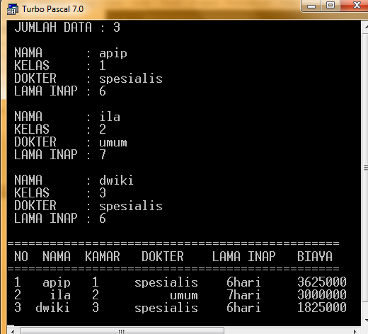
Soal ..!!
Buatlah program hitung biaya penginapan di hotel dengan ketentuan sebagai berikut :
- Tarif perhari untuk kelas regular sebesar Rp. 250.000 ,untuk kelas biasa sebesar Rp. 350.000 ,dan untuk kelas VIP sebesar Rp. 500.000
- Untuk kelas VIP jika lama inapnya lebih dari 5 hari akan di kenakan diskon sebesar 10%
- Rumus :
Biaya = lama inap * tarif - diskon
>> Ini adalah contoh source code program hitung biaya inap di hotel :
uses crt;
var
jk : array [1..10] of char;
nama,kls : array [1..10] of string;
li : array [1..10] of longint;
biaya,tf,pot : array [1..10] of real;
x,jd : integer;
PROCEDURE RTENGAH(TEKS:STRING;BAR:INTEGER);
VAR KOL:INTEGER;
BEGIN
KOL:=(80-LENGTH(TEKS)) DIV 2;
GOTOXY(KOL,BAR);WRITE(TEKS);
END;
begin
textcolor(6);
clrscr;
RTENGAH('Jumlah Data : ',02);readln(jd);
writeln;
x:=1;
while x<=jd do
begin
RTENGAH(' Nama : ',04);clreol;readln(nama[x]);
RTENGAH(' Jenis Kelamin : ',05);clreol;readln(jk[x]);
RTENGAH(' Kelas : ',06);clreol;readln(kls[x]);
RTENGAH(' Lama Inap : ',07);clreol;readln(li[x]);
x:=x+1;
end;
begin
clrscr;
for x:=1 to jd do
begin
if kls[x]='regular' then tf[x]:=250000
else if kls[x]='vip' then tf[x]:=500000
else tf[x]:=350000;
if kls[x]='VIP'
then
if li[x]>5 then pot[x]:=(li[x]*500000)*0.1;
biaya[x]:=li[x]*tf[x]-pot[x];
end;
begin
textcolor(5);
textbackground(8);
clrscr;
gotoxy(20,02);write('==============================================');
gotoxy(20,03);write('NO');
gotoxy(25,03);write('NAMA');
gotoxy(32,03);write('SEX');
gotoxy(39,03);write('KELAS');
gotoxy(47,03);write('LAMA INAP');
gotoxy(59,03);write('BIAYA');
gotoxy(20,04);write('==============================================');
end;
for x:=1 to jd do
begin
gotoxy(20,04+x);write(x);
gotoxy(25,04+x);write(nama[x]);
gotoxy(32,04+x);write(' ',jk[x]);
gotoxy(39,04+x);write(kls[x]);
gotoxy(51,04+x);write(li[x]);
gotoxy(59,04+x);write(biaya[x]:0:0);
delay(300);
end;
end;
end.
>> Ini adalah contoh inputnya :
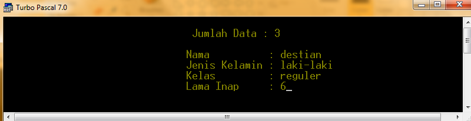
>> Ini adalah contoh outputnya :
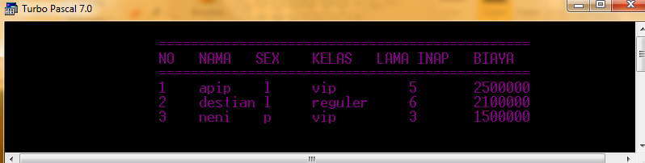
Soal ..!!
Buatlah program hitung biaya belanja dengan ketentuan sebagai berikut :
- Jenis potong bagian dada sebesar Rp. 7.000 ,sayap Rp. 7.500 ,paha Rp. 8.000 per potongnya
- Rumus :
Harga = banyaknya potong * harga jenis potong
Pajak = 10% dari jumlah harga
Total = Jumlah harga - pajak
>> Ini adalah contoh source code program hitung biaya belanja (struk) :
uses crt;
var
nama,jp : array [1..10] of string;
bp : array [1..10] of longint;
biaya,tf : array [1..10] of real;
jumbia,pajak,tot : real;
x,jd : integer;
PROCEDURE RTENGAH(TEKS:STRING;BAR:INTEGER);
VAR KOL:INTEGER;
BEGIN
KOL:=(80-LENGTH(TEKS)) DIV 2;
GOTOXY(KOL,BAR);WRITE(TEKS);
END;
begin
textcolor(6);
clrscr;
RTENGAH('Jumlah Data : ',02);readln(jd);
writeln;
x:=1;
while x<=jd do
begin
RTENGAH(' Jenis potong : ',05);clreol;readln(jp[x]);
RTENGAH(' Banyak potong : ',06);clreol;readln(bp[x]);
x:=x+1;
end;
begin
clrscr;
for x:=1 to jd do
begin
if jp[x]='dada' then tf[x]:=7000
else if jp[x]='paha' then tf[x]:=8000
else tf[x]:=7500;
biaya[x] := bp[x]*tf[x];
jumbia := jumbia + biaya[x];
pajak := jumbia * 10/100;
tot := jumbia - pajak;
end;
begin
textcolor(5);
textbackground(8);
clrscr;
gotoxy(05,02);write(' STRUK BELANJA GEROBAK FRIED CHICKEN');
gotoxy(05,03);write('==============================================================');
gotoxy(05,04);write('NO');
gotoxy(10,04);write('JENIS POTONG');
gotoxy(25,04);write('HARGA SATUAN ');
gotoxy(40,04);write('BANYAK BELI');
gotoxy(55,04);write('JUMLAH HARGA');
gotoxy(05,05);write('==============================================================');
gotoxy(40,10);write('jumlah bayar');
gotoxy(40,11);write('pajak 10%');
gotoxy(40,13);write('total bayar');
end;
for x:=1 to jd do
begin
gotoxy(05,05+x);write(x);
gotoxy(10,05+x);write(' ',jp[x]);
gotoxy(27,05+x);write(tf[x]:0:0);
gotoxy(44,05+x);write(bp[x]);
gotoxy(58,05+x);write(biaya[x]:0:0);
gotoxy(58,10);write(jumbia:0:0);
gotoxy(58,11);write(pajak:0:0);
gotoxy(58,13);write(tot:0:0);
delay(300);
end;
end;
end.
>> Ini adalah contoh inputnya :
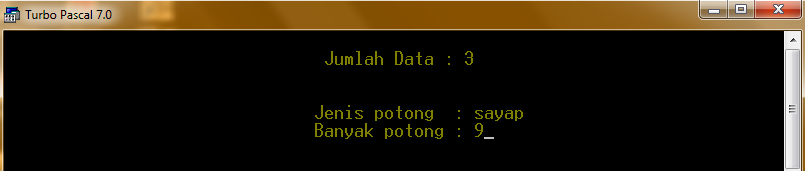
>> Ini adalah contoh outputnya :
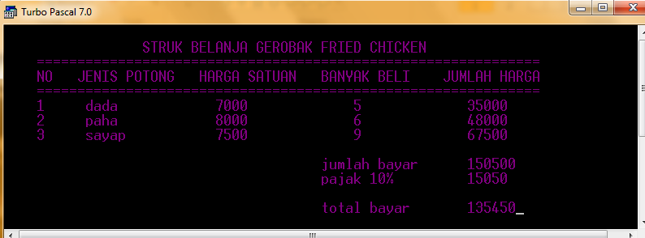